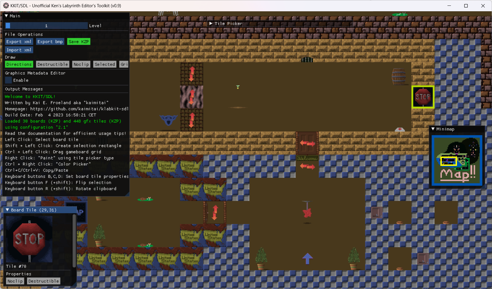

Thank you for checking out the KKIT/SDL editor. With this tool you will be able to create and alter levels for Ken's Labyrinth, as well as modify the majority of the graphics in the game. Check out the various sections of this document for an explanation of the program's functionality.
When opening the editor, the program looks for a file kkit-sdl-config.xml in the same directory as the executable. This is a configuration XML which lets you set, among other things, the following important properties:
- Working directory (where to load/save gamefiles)
- Tile picker layout
The XML root node has an attribute active_configuration which lets you switch between configurations easily. By default this value is 0, which points to the configuration used for Ken's Labyrinth v2.1 which is the most relevant version to modify.
Each configuration points to a project folder, where files will be loaded from and saved to. We support relative paths (relative to the kkit-sdl executable), as well as absolute paths. By default the file points to folders that ship with the editor.
If the configuration file does not exist, we will load a default configuration for v2.1, but with no custom tile picker layout. In this case the project folder will be the same as the folder of that of the executable.
The configuration is loaded when the program starts, and can not be reloaded during runtime.
Not also that, if WALLS.DAT and/or BOARDS.DAT exist in the project folder, these files take precedence over their KZP counterparts when starting up and initializing the program. (see the next sections for saving to DAT)
The first of the three screens in the application is called "Boards". This is where you can edit the levels in BOARDS.KZP. (BOARDS.DAT for v1.x)
The board editor consists of four sub-windows; Board, Tile Picker, Minimap and selected board tile.
The board window shows the loaded board, and makes up the editable area of the screen. The tile picker shows all tiles (from WALLS.KZP) available, and the layout depends on the configuration in kkit-sdl-conf.xml
Two tiles will always be selected on this screen; one on the board grid, and one on the tile picker grid. The selected tile sub-window will show the properties of the selected board tile, and the label below the tile picker will show the properties of the selected Tile Picker tile.
The minimap will show which section we're seeing in the board sub-window, out of the whole level. Clicking the minimap will also move the board view.
The selected tile sub-window will show the properties of the selected tile on the board grid, as well as make buttons available for toggling up to three properties; destruct, clip and direction. (direction only available for tiles of type Directional, see Gfx-section for tile metadata)
Destructible tiles can be destroyed by shooting them, and clippable tiles can be walked through. A tile that is both clip and destruct, will typically become clippable after it has been shot once.
Directional tiles can extend from north to south (horizontal) or west to east (horizontal) which can be indicated by arrows in the editor.
Each board has a player start position, and a direction, which is indicated by a blue arrow.
The four buttons below the tile picker (Dir, Destr, Clip and Tile) are togglable buttons that will turn on or off indications on the board grid. "Dir" will indicate which way directional tiles span, "Destr" will flash destructible tiles, "Clip" will flash clippable tiles and "Tile" will flash all tiles of the same type as the currently selected tile picker tile.
The next three buttons (Prev, Next and Count) will perform logic. "Prev" will go to the previous tile of the same type as the selected tile on the board grid, "Next" will go to the next tile. The order in which we iterate over tiles are the same order in which teleports link to each other. Hold Ctrl when using these two buttons to iterate over tiles of the same type as the selected Tile Picker tile type. (if any exist on the board)
The count button will count all tiles of the selected type on the current board. Hold shift to count for all boards, and hold Ctrl to count for the type of the Tile Picker type instead of the selected board tile.
The Export XML button will save the current board as XML, (hold Shift to save all boards) and the Import XML button will load the current board from XML. (hold shift to load all XMLs at once) This is one way to manipulate and share boards individually, and XML is better than binaries for version control among other things.
The "Save KZP" button will write your current levels back to BOARDS.KZP
The "Save DAT" button will write your current levels back to BOARDS.DAT, which is an uncompressed version of the KZP. This is required for v1.x levels, but not much use for v2.x.
The "Save BMP" button will save the entire board as a 4096x4096x256 color bmp, just for fun ;)
Mouse functions for board grid:
Left click the board grid to select a tile
Shift + Left click the board grid to make a selection rectangle
Ctrl + Left click the board grid to set the selected tile picker tile to be the clicked board tile ("color picker")
Right click the board grid to "paint", using the Tile Picker type
Mousehweel up and down will scroll the board view up and down
Shift + Mousehweel up and down will scroll the board view left and right
Ctrl + Mousehweel up and down will zoom in and out
Keyboard Shortcuts for board grid: ("cursor" here means the selected board tile)
Ctrl+C - Copy selection to clipboard
Ctrl+V - Paste clipboard at cursor (if clipboard fits)
Ctrl+X - Cut selection
Delete - Clear selection
Shift+V - Show where clipboard would be pasted, if using Ctrl+V (if clipboard fits)
Arrow keys - Move board view (hold Ctrl for faster panning)
B - Toggle cursor destructible property ([B]last)
C - Toggle cursor clip property
D - Toggle cursor direction, if the tile is of type Directional
F - Flip selection around horizontal axis (hold shift to flip around vertical axis)
R - Rotate clipboard counter-clockwise 90 degrees (hold Shift to rotate clockwise)
Ctrl+Plus/Minus - Zoom in and out (centered)
Ctrl+H - Center on player start position
Ctrl+N - Same as the "Next" button
Ctrl+P - Same as the "Prev" button
Ctrl+F - Center the board view on the selected board tile
Ctrl+S - Save KZP (hold Shift to save DAT)
PgUp/PgDown - Go to next/prev board
Home/End - Go to first/last board
Mouse and keyboard functions for Tile Picker:
Left click the tile picker to select a tile
Mousehweel up and down will scroll the tile picker up and down (hold Ctrl for faster scrolling)
Shift + PgUp/PgDown - Move tile picker one "screen" up or down
Shift + Home/End - Move to start/end of tile picker
The second of the three screens is called "Gfx". This is where you edit the game graphics stored in WALLS.KZP.

On the left is the list of available tiles, and on the right we see the selected tile and its metadata.
The buttons under the tile preview will let you toggle the metadata of the tile in the following order:
- Tile type: Block, Plane or Directional
- Clip or not
- Destrutible or not
The block types behave as follows:
- Block: The tile faces in 4 directions on the edges of the board cell it occupies. Example: walls
- Directional: The tile makes up one plane spanning in the n-s or e-w direction (the direction is determined by the concrete instantiation on a board) Example: doors
- Plane: The tile makes up one plane that always faces the player. Example: Barrels, tables, pick-up items and powerups
The other properties - clip and destructible - only give these default properties of the tile. The instantiations on a board can override them.
Keep in mind also that certain blocks have special meaning which is hard-coded in the game, so change tile metadata with caution.
Buttons:
- Exp BMP: Save selected tile graphics as BMP (hold shift to save all tiles as BMPs)
- Imp BMP: Load tile graphics from BMPs (hold shift to import all BMPs)
- Exp XML: Save selected tile, including metadata, as XML (hold shift to save all)
- Imp XML: Load tile from XML (hold shift to load all XMLs)
- Save KZP: Save tiles to WALLS.KZP
- Save DAT: Save tiles to WALLS.DAT, an uncompressed version of the KZP. (not necessarily useful)
The exported BMPs will be 256-color images with the palette used by the game. When altering graphics, try to use a graphics editor that does not change the palette of the image, as the colors cannot be changed anyway. When a BMP is imported, the editor does a nearest-color scheme to translate the BMP palette into the game palette. (Windows Paint, for example, in my experience, is not good at preserving the palette, and does not yield good results)
The rgb-value indicating transparency is (204, 92, 112)
The XMLs for boards store the tiles row by row, left to right. The player start direction and position are stored in the header.
The XMLs for tile graphics store the pixels (palette indexes) row by row, left to right. The metadata - tile type, destructible and clip - are stored in the header.
The configuration xml - kkit-sdl-config.xml - holds project configurations. The header holds the following attributes:
- app_version: The version of the editor. Preparing for backward-compatibility in case we decide to change the format in a future release
- active_config_no: The concrete configuration that will be loaded on program start. This is the only value in the header that should be changed by users.
For each configuration block, the following attributes are stored in the header:
- no: The number of the configuration. This should be unique per configuration, and one of them should match the value of active_config_no in the root header
- label: Just a name for the configuration
- project_directory: The folder for the game files we are editing. Can be a relative or absolute path.
- board_count/wall_count: The number of boards and walls that will be written to the file header. For version 2.0 the board count differs from the actual number of boards for technical reasons.
- lzw_header_type: A value of 1 means we write v1.x-type KZP files. Any other value means 2.x. (although, using a third value, maybe we will support Walken in the future?) ;)
Only the attribute project_directory should be changed by users.
For each configuration we can define a tile picker, the order in which tiles should appear when editing boards. Values not defined here will be put at the end of the tile picker automatically when the configuration has been loaded.
For each configuration we can also define a clip override; a list of tiles which will flash as clippable on the board grid, even if the clip property does not override the metadata of the tile.
Ken Silverman for creating Ken's Labyrinth and making the source code for the game and the tools available.
Jan Lönnberg for creating LAB3D/SDL, a modern port of the game
Katie Stafford for creating an enhanced version of LAB3D/SDL - this is the version I used the most in my testing
Before we open the repository and ship the first public release, we will:
- Make a command line utility for compressing/decompressing the rest of the files: MUSIC.KZP, SOUNDS.KZP, STORY.KZP and LAB3D.KZP. The code is mostly in place, but is not in use at the moment.
- Show more informational and error messages in the application
- Fix bugs discovered during testing.
If the program does not start at all, check the file kkit-sdl-err.log which will be created when an unhandled exception occurs. Usually this will be due to an invalid input file (WALLS.KZP/BOARDS.KZP/*.xml), or invalid project_directory in the config xml. Loading a 2.x-board xml into a 1.x-project will cause problems too, as 2.x has more tiles available than 1.x.
If Windows gives you a message that the program cannot be started, make sure you have the x64 Visual C++ Redistributables. This should be part of most Windows installations by default, but can also be found at Microsoft Support Visual C++ downloads.
If the edited graphics look terrible, or lose transparency - try to use a graphics editor that does not change the palette of the image.
Section to be created...
For feedback, suggestions, bug reports and questions, the author (Kai E. Frøland aka "kaimitai") can be reached via email, Threema or kaimitai@github.